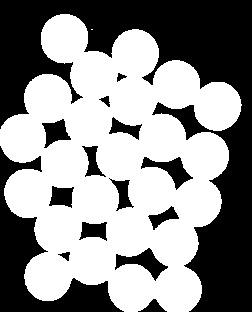
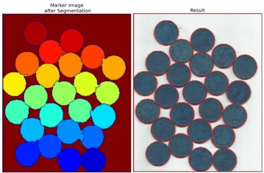

Image Segmentation with Watershed Algorithm
Goal
In this chapter,
- We will learn to use marker-based image segmentation using watershed algorithm
- We will see: cv2.watershed()
Theory
Any grayscale image can be viewed as a topographic surface where high intensity denotes peaks and hills while low intensity denotes valleys. You start filling every isolated valleys (local minima) with different colored water (labels). As the water rises, depending on the peaks (gradients) nearby, water from different valleys, obviously with different colors will start to merge. To avoid that, you build barriers in the locations where water merges. You continue the work of filling water and building barriers until all the peaks are under water. Then the barriers you created gives you the segmentation result. This is the “philosophy” behind the watershed. You can visit the CMM webpage on watershed to understand it with the help of some animations.
But this approach gives you oversegmented result due to noise or any other irregularities in the image. So OpenCV implemented a marker-based watershed algorithm where you specify which are all valley points are to be merged and which are not. It is an interactive image segmentation. What we do is to give different labels for our object we know. Label the region which we are sure of being the foreground or object with one color (or intensity), label the region which we are sure of being background or non-object with another color and finally the region which we are not sure of anything, label it with 0. That is our marker. Then apply watershed algorithm. Then our marker will be updated with the labels we gave, and the boundaries of objects will have a value of -1.
Code
Below we will see an example on how to use the Distance Transform along with watershed to segment mutually touching objects.
Consider the coins image below, the coins are touching each other. Even if you threshold it, it will be touching each other.

We start with finding an approximate estimate of the coins. For that, we can use the Otsu’s binarization.
import numpy as np import cv2 from matplotlib import pyplot as plt img = cv2.imread('coins.png') gray = cv2.cvtColor(img,cv2.COLOR_BGR2GRAY) ret, thresh = cv2.threshold(gray,0,255,cv2.THRESH_BINARY_INV+cv2.THRESH_OTSU)
Result:
Now we need to remove any small white noises in the image. For that we can use morphological opening. To remove any small holes in the object, we can use morphological closing. So, now we know for sure that region near to center of objects are foreground and region much away from the object are background. Only region we are not sure is the boundary region of coins.
So we need to extract the area which we are sure they are coins. Erosion removes the boundary pixels. So whatever remaining, we can be sure it is coin. That would work if objects were not touching each other. But since they are touching each other, another good option would be to find the distance transform and apply a proper threshold. Next we need to find the area which we are sure they are not coins. For that, we dilate the result. Dilation increases object boundary to background. This way, we can make sure whatever region in background in result is really a background, since boundary region is removed. See the image below.

The remaining regions are those which we don’t have any idea, whether it is coins or background. Watershed algorithm should find it. These areas are normally around the boundaries of coins where foreground and background meet (Or even two different coins meet). We call it border. It can be obtained from subtracting sure_fg area from sure_bg area.
# noise removal kernel = np.ones((3,3),np.uint8) opening = cv2.morphologyEx(thresh,cv2.MORPH_OPEN,kernel, iterations = 2) # sure background area sure_bg = cv2.dilate(opening,kernel,iterations=3) # Finding sure foreground area dist_transform = cv2.distanceTransform(opening,cv2.DIST_L2,5) ret, sure_fg = cv2.threshold(dist_transform,0.7*dist_transform.max(),255,0) # Finding unknown region sure_fg = np.uint8(sure_fg) unknown = cv2.subtract(sure_bg,sure_fg)
See the result. In the thresholded image, we get some regions of coins which we are sure of coins and they are detached now. (In some cases, you may be interested in only foreground segmentation, not in separating the mutually touching objects. In that case, you need not use distance transform, just erosion is sufficient. Erosion is just another method to extract sure foreground area, that’s all.)

Now we know for sure which are region of coins, which are background and all. So we create marker (it is an array of same size as that of original image, but with int32 datatype) and label the regions inside it. The regions we know for sure (whether foreground or background) are labelled with any positive integers, but different integers, and the area we don’t know for sure are just left as zero. For this we use cv2.connectedComponents(). It labels background of the image with 0, then other objects are labelled with integers starting from 1.
But we know that if background is marked with 0, watershed will consider it as unknown area. So we want to mark it with different integer. Instead, we will mark unknown region, defined by unknown, with 0.
# Marker labelling ret, markers = cv2.connectedComponents(sure_fg) # Add one to all labels so that sure background is not 0, but 1 markers = markers+1 # Now, mark the region of unknown with zero markers[unknown==255] = 0
See the result shown in JET colormap. The dark blue region shows unknown region. Sure coins are colored with different values. Remaining area which are sure background are shown in lighter blue compared to unknown region.

Now our marker is ready. It is time for final step, apply watershed. Then marker image will be modified. The boundary region will be marked with -1.
markers = cv2.watershed(img,markers) img[markers == -1] = [255,0,0]
See the result below. For some coins, the region where they touch are segmented properly and for some, they are not.
Additional Resources
- CMM page on Watershed Tranformation
Exercises
- OpenCV samples has an interactive sample on watershed segmentation, watershed.py. Run it, Enjoy it, then learn it.